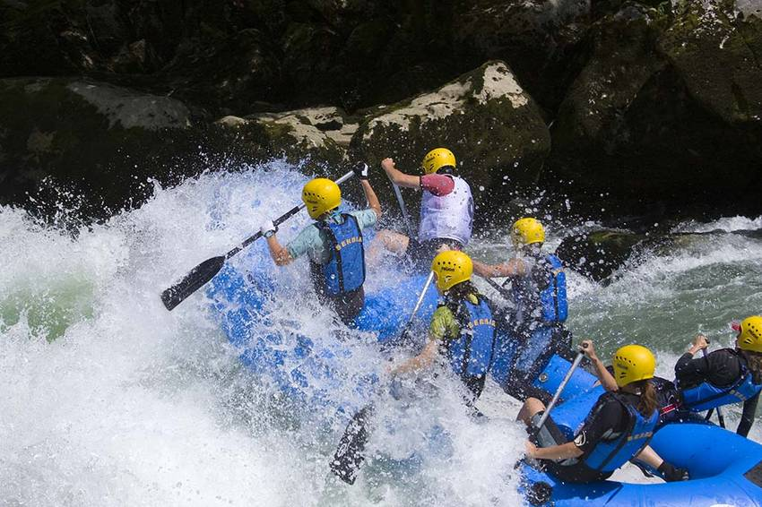
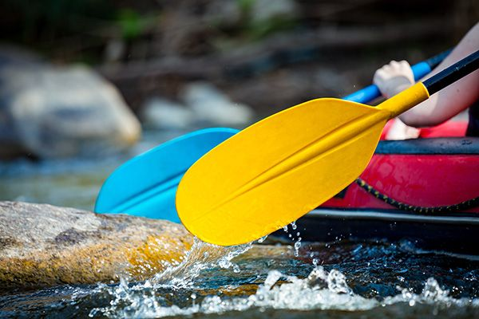
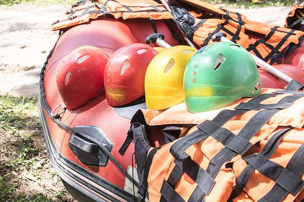
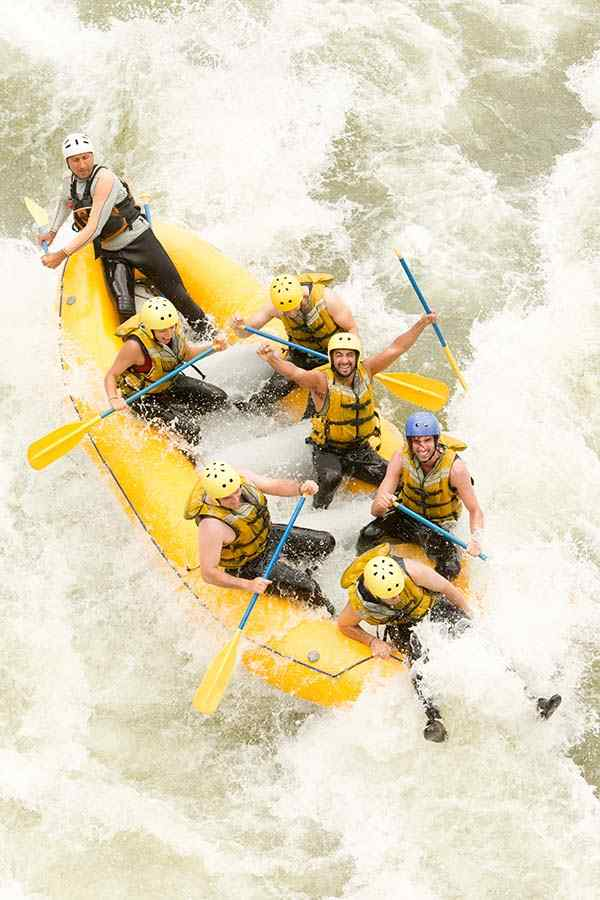
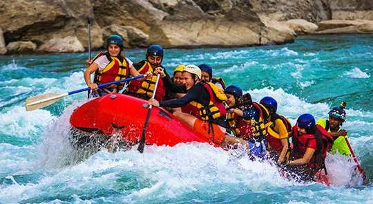
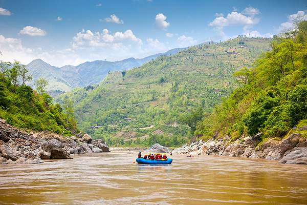

At White Water Rafting Co, our mission is simple: turn first-time paddlers into lifelong river lovers. Every trip is guided by certified experts who care as much about your safety as they do about the thrill of the ride. Adventure, respect for the river, and unforgettable memories — that's the White Water creed.

White Water Rafting Co.
History
White Water Rafting Co. was founded in 2005 by a small crew of river guides who believed the region's rapids deserved a proper home base. What started as two rafts and a borrowed pickup truck has grown into the area's most trusted outfitter, with a fleet of rafts, a full team of certified guides, and thousands of happy paddlers every season. We've kept the same philosophy since day one: small groups, real expertise, and a genuine love for the water.
Adventure Awaits You!




